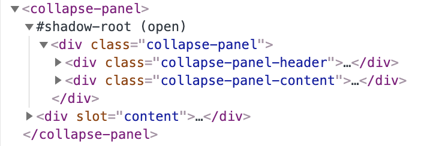

目前前端的流行框架，如React、Vue、Angular都是组件框架。而Web Components 目前已经成为浏览器支持的标准API，它允许我们创建自定义元素，通过HTML、JavaScript、CSS来实现可复用的组件。
Web Components由三项技术组成：
Custom elements（自定义元素）
通过一组JavaScript API来定义Custom elements。
Shadow DOM（影子DOM）
一组JavaScript API，用于将封装的“影子”DOM树附加到元素（与主文档DOM分开呈现）并控制其关联的功能。Shadow DOM可以看作是“DOM中的DOM”，它有自己独立的DOM树，具有自己的元素和样式，与原始DOM完全隔离。
HTML templates（HTML模板）
通过 template 和 slot，来定义可复用的元素结构。
下面通过一个例子来介绍如何创建一个自定义的折叠面板。
一、创建自定义元素
首先，我们需要定义一个类并继承自HtmlElement；
1
2
3
4
5
| class CollapsePanel extends HTMLElement {
constructor() {
super();
}
}
|
接下来，通过 CustomElementRegistry.define() 注册自定义元素；
1
| window.customElements.define('collapse-panel', CollapsePanel);
|
之后就可以在html中使用我们自定义的元素。
1
| <collapse-panel></collapse-panel>
|
二、template 和 slot
template
目前collapse-panel的内容还没有定义，Web Compnents API 提供了template标签来定义元素的DOM。元素的样式稍后定义。
1
2
3
4
5
6
7
8
9
10
11
12
13
14
15
16
17
| <template id="collapsePanelTemplate">
<div class="collapse-panel">
<div class="collapse-panel-header">
<div class="collapse-panel-icon">
<svg viewBox="64 64 896 896" fill="#000" width="1em" height="1em">
<path
d="M765.7 486.8L314.9 134.7A7.97 7.97 0 00302 141v77.3c0 4.9 2.3 9.6 6.1 12.6l360 281.1-360 281.1c-3.9 3-6.1 7.7-6.1 12.6V883c0 6.7 7.7 10.4 12.9 6.3l450.8-352.1a31.96 31.96 0 000-50.4z">
</path>
</svg>
</div>
<span>collapse panel header</span>
</div>
<div class="collapse-panel-content">
collapse panel content
</div>
</div>
</template>
|
接下来，我们将template定义的内容添加到自定义元素中。
1
2
3
4
5
6
7
8
9
| class CollapsePanel extends HTMLElement {
constructor() {
super();
const template = document.getElementById('collapsePanelTemplate');
const templateContent = template.content.cloneNode(true);
this.shadow = this.attachShadow({ mode: 'open' });
this.shadow.appendChild(templateContent);
}
}
|
slot(插槽)
通常，折叠面板的内容我们是希望可以自定义的。通过slot我们可以实现这样的自定义内容。
slot 作为Web Components API 的一部分，是Web组件内的一个占位符。该占位符可以在后期使用自己的标记语言填充，这样您就可以创建单独的DOM树，并将它与其它的组件组合在一起。
下面我们通过slot定义一个折叠面板的具体内容。
首先我们修改一下模板，将slot插入到我们需要使用的位置，这里使用了name为“content”的slot；
1
2
3
4
5
| <div class="collapse-panel-content">
<slot name="content">
<p>default collapse panel content</p>
</slot>
</div>
|
接下来，在使用collapse-panel的时候，我们可以为其添加slot的具体内容；
1
2
3
4
5
6
| <collapse-panel>
<div slot="content">
<h1>Title</h1>
<p>This is customized panel content.</p>
</div>
</collapse-panel>
|
我们插入了一个div作为折叠面板的内容部分，这里div的slot属性的内容需要和模板中使用的slot的名称对应。
在一个自定义元素中，我们可以使用多个不同的slot。如果在使用元素时没有提供对应的slot，则模板中的slot不会被替换，所以在定义模板时也可以提供默认的slot内容。
三、Shadow DOM
通过Element.attachShadow() 方法将一个 shadow root 附加到任何一个元素上。它接受一个配置对象作为参数，该对象有一个 mode 属性，值可以是 open 或者 closed。
open模式下，通过 document.querySelector('collapse-panel').shadowRoot 可以获取shadowRoot的引用；而在closed模式下，则会返回null。
1
2
3
4
| //方法给指定的元素挂载一个Shadow DOM，并且返回它的 ShadowRoot.
//open 指定为开放的封装模式。
//closed 指定为关闭的封装模式。
const shadow = this.attachShadow({ mode: 'open' });
|
可以看到生成的DOM结构：


- Shadow host：一个常规 DOM节点，Shadow DOM 会被附加到这个节点上。
- Shadow tree：Shadow DOM内部的DOM树。
- Shadow boundary：Shadow DOM结束的地方，也是常规 DOM开始的地方。
- Shadow root: Shadow tree的根节点。
四、组件样式
首先介绍一些与自定义元素相关的伪类：
:defined
匹配任何已定义(内置或自定义)的元素。结合自定义元素名称使用，匹配自定义的元素，collapse-panel:defined {}
:host
匹配shadow DOM 的 shadow host，即自定义元素本身
:host()
匹配shadow DOM 的 shadow host，但只匹配给定方法的选择器的 shadow host 元素。结合自定义元素名称使用，匹配自定义的元素 :host(collapse-panel) {}
:host-context()
匹配shadow DOM 的 shadow host，但只匹配给定方法的选择器匹配元素的子 shadow host 元素。
接下来，我们为自定义元素添加一些样式：
1
2
3
4
5
6
7
8
9
10
11
12
13
14
15
16
17
18
19
20
21
22
23
24
25
26
27
28
29
30
31
32
33
34
35
36
37
38
39
40
41
42
43
44
45
46
47
48
49
50
51
52
53
54
55
56
57
58
59
60
61
62
63
64
65
66
| <template id="collapsePanelTemplate">
<style>
:host {
font-family: 'Times New Roman', Times, serif;
}
.collapse-panel-header {
position: relative;
padding: 12px 16px 12px 40px;
color: rgba(0,0,0,.85);
cursor: pointer;
background-color: #fafafa;
border: 1px solid #d9d9d9;
border-radius: 2px;
}
.collapse-panel-icon {
font-style: normal;
line-height: 0;
text-align: center;
text-transform: none;
vertical-align: -.125em;
position: absolute;
top: 5.0005px;
left: 16px;
display: inline-block;
padding: 12px 0 0;
font-size: 12px;
}
.collapse-panel-content {
display: flex;
height: 0;
overflow: hidden;
padding: 0;
border: 0;
}
.collapse-panel .collapse-panel-icon svg {
transition: transform .24s;
}
.collapse-panel.active .collapse-panel-icon svg{
transform: rotate(90deg);
}
.collapse-panel.active .collapse-panel-content {
height: auto;
padding: 16px;
border: 1px solid #d9d9d9;
border-top: 0;
overflow: auto;
}
</style>
<div class="collapse-panel active">
<div class="collapse-panel-header">
<div class="collapse-panel-icon">
<svg viewBox="64 64 896 896" fill="#000" width="1em" height="1em">
<path
d="M765.7 486.8L314.9 134.7A7.97 7.97 0 00302 141v77.3c0 4.9 2.3 9.6 6.1 12.6l360 281.1-360 281.1c-3.9 3-6.1 7.7-6.1 12.6V883c0 6.7 7.7 10.4 12.9 6.3l450.8-352.1a31.96 31.96 0 000-50.4z">
</path>
</svg>
</div>
<span>collapse panel header</span>
</div>
<div class="collapse-panel-content">
<slot name="content">
<p>default collapse panel content</p>
</slot>
</div>
</div>
</template>
|
五、组件扩展
通常折叠面板的header内容也是可配置的，这里我们将header的内容作为参数传入。 同时我们为header添加click事件，在点击后，显示或者隐藏panel的内容，修改后的类为：
1
2
3
4
5
6
7
8
9
10
11
12
13
14
15
16
17
18
19
20
21
22
23
24
| class CollapsePanel extends HTMLElement {
constructor() {
super();
const template = document.getElementById('collapsePanelTemplate');
const templateContent = template.content.cloneNode(true);
// 方法给指定的元素挂载一个Shadow DOM，并且返回它的 ShadowRoot.
// open 指定为开放的封装模式。
// closed 指定为关闭的封装模式。
this.shadow = this.attachShadow({ mode: 'open' });
// 获取传入的title来设置header内容
templateContent.querySelector('.collapse-panel-header > span').innerText = this.getAttribute('title');
this.shadow.appendChild(templateContent);
this.$header = this.shadow.querySelector('.collapse-panel-header');
this.$header.addEventListener('click', () => {
let $panel = this.shadow.querySelector(".collapse-panel");
if ($panel.classList.contains('active')) {
$panel.classList.remove('active');
} else {
$panel.classList.add('active');
}
});
}
}
|
同时，在使用组件时，将title传入：
1
2
3
4
5
6
| <collapse-panel title="This is a panle header">
<div slot="content">
<h1>Title</h1>
<p>This is customized panel content.</p>
</div>
</collapse-panel>
|
六、生命周期函数
生命周期函数的顺序为：
constructor -> attributeChangedCallback -> connectedCallback --> disconnectedCallback
当使用attributeChangedCallback时，需要在类的定义中，定义一个observedAttributes 的get函数，然后在修改对应的属性时，attributeChangedCallback才会被触发。
如当title发生变化时，我们需要动态更新panel的header:
1
2
3
4
5
6
7
8
9
10
11
| static get observedAttributes() {
return ['title'];
}
attributeChangedCallback(attr, oldVal, newVal) {
console.log('attributeChanged');
if (attr === 'title') {
let $span = this.shadow.querySelector('.collapse-panel-header > span');
if ($span) $span.innerText = newVal;
}
}
|
参考
https://developer.mozilla.org/zh-CN/docs/Web/Web_Components
http://www.ruanyifeng.com/blog/2019/08/web_components.html
https://www.robinwieruch.de/web-components-tutorial
https://www.dannymoerkerke.com/blog/web-components-will-replace-your-frontend-framework